לחצו בכל מקום לסגירה · click anywhere to close
זיהוי דום לב · טכניקת עיסויים · הנשמות · דפיברילטור (AED) · עדכוני 2025
Recognition · compression technique · breaths · AED · 2025 updates
דמויות ותוכן / Figures & content: AHA & AAP 2025 — Part 6: Pediatric Basic Life Support. Circulation. 2025;152(suppl 2):S424–S447.
בתינוק: אגודלים עוטפים או עקב כף יד אחת — עומק טוב יותר.
חיבור מוקדם עם מנחית מתח ומדבקות ילדים אם זמינים.
מתחילים ב-5 טפיחות גב ואז 5 לחיצות בטן.
5 טפיחות גב + 5 לחיצות חזה — ללא לחיצות בטן.
מאוחדת לתינוק, ילד ומבוגר.
CPR מלא משפר הישרדות; גם אנשים מן הציבור מעודדים לתת הנשמות.
Infant: 2 thumb–encircling or heel-of-1-hand — better depth.
Early application with attenuator + pediatric pads if available.
Now begins with 5 back blows, then 5 abdominal thrusts.
5 back blows + 5 chest thrusts — no abdominal thrusts.
Unified across infants, children and adults.
Conventional CPR improves survival; lay rescuers encouraged to give breaths.
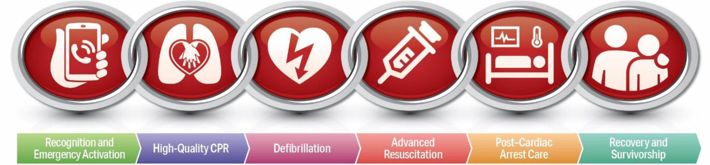
זיהוי והפעלת חירום ← CPR איכותי ← דפיברילציה ← החייאה מתקדמת ← טיפול לאחר דום לב ← החלמה. בילדים הסיבה לדום לב היא לרוב נשימתית (דום נשימה ← דום לב) — ולכן ההנשמות קריטיות.
Recognition & activation → high-quality CPR → defibrillation → advanced resuscitation → post-arrest care → recovery. In children the cause is usually respiratory — so breaths are critical.
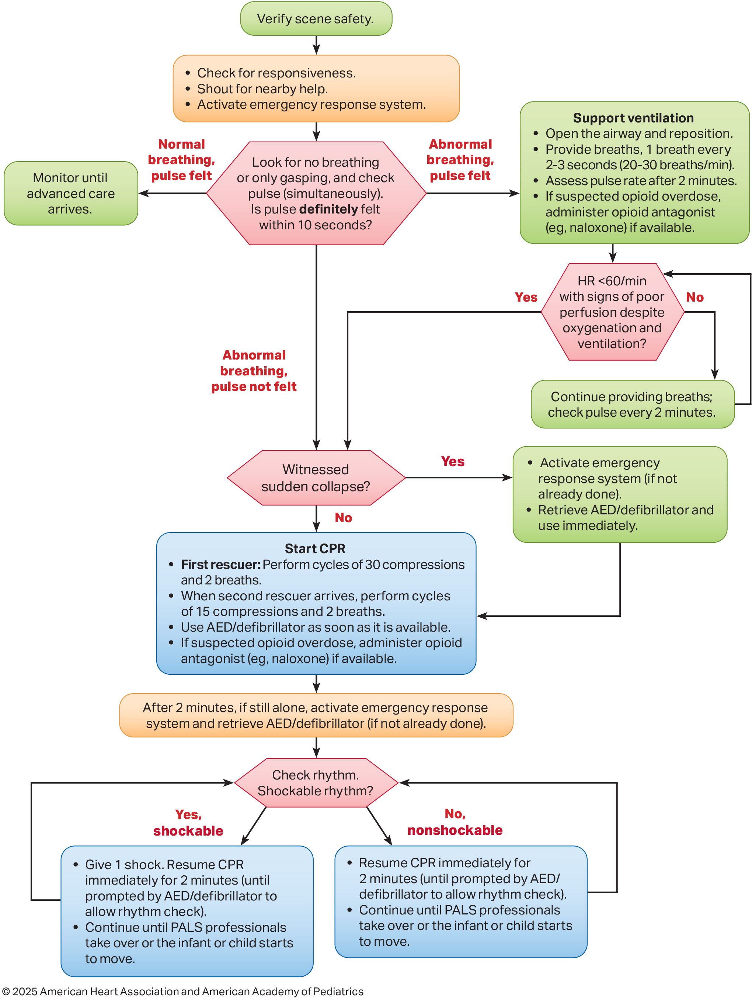
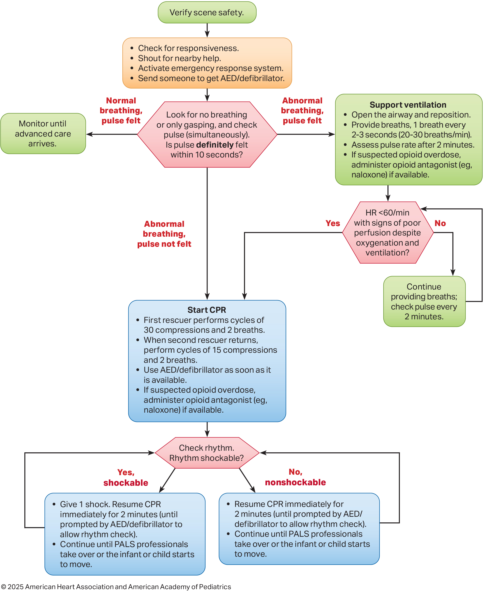
5 מרכיבים: עומק נאות · קצב מיטבי · מיעוט הפרעות · חזרה מלאה · הימנעות מאוורור-יתר. ההנחיות אינן קובעות סף מספרי ל-CCF; מנשימים בחמצן 100% במהלך CPR.
5 components: adequate depth · optimal rate · minimal interruptions · full recoil · avoid over-ventilation. The guideline sets no numeric CCF threshold; ventilate with 100% O₂ during CPR.
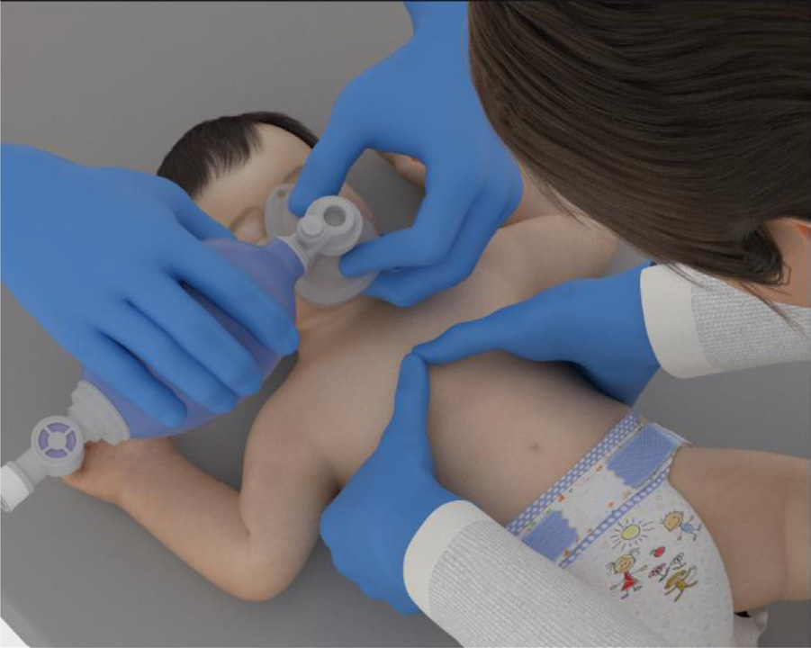
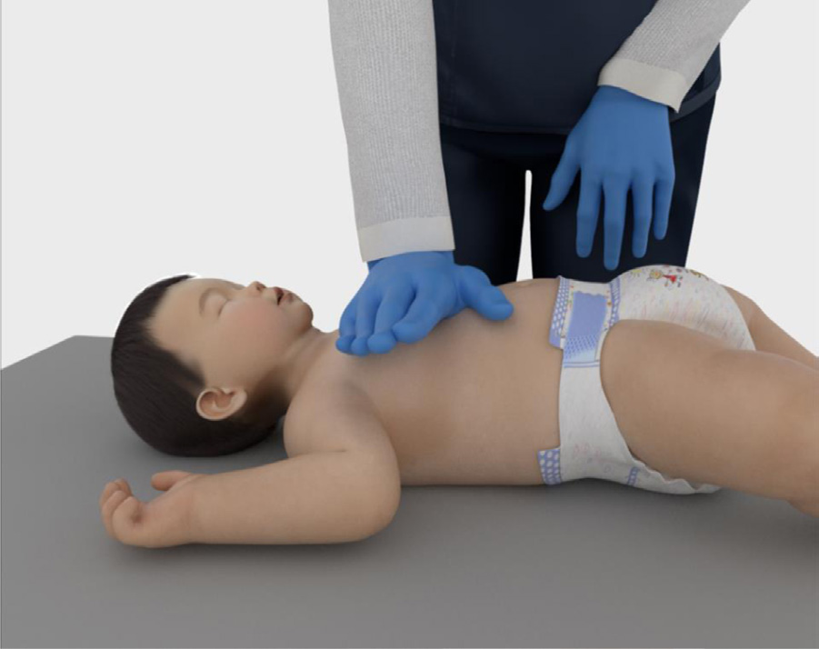
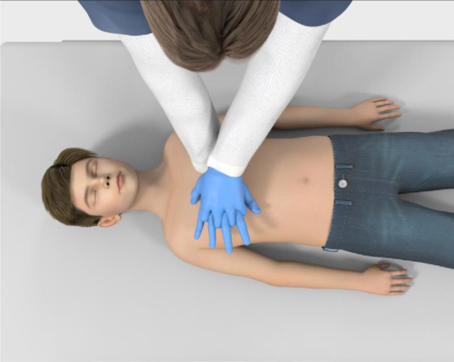
בוטל 2025טכניקת שתי האצבעות בתינוק — אינה משיגה עומק מספק. מיקום: מחצית תחתונה של עצם החזה, על משטח קשיח וישר. טכניקת האגודלים מעלה לחץ דם קורונרי.
REMOVED 2025the infant 2-finger technique — fails to achieve adequate depth. Location: lower half of the sternum, on a firm flat surface. 2-thumb encircling raises coronary perfusion pressure.
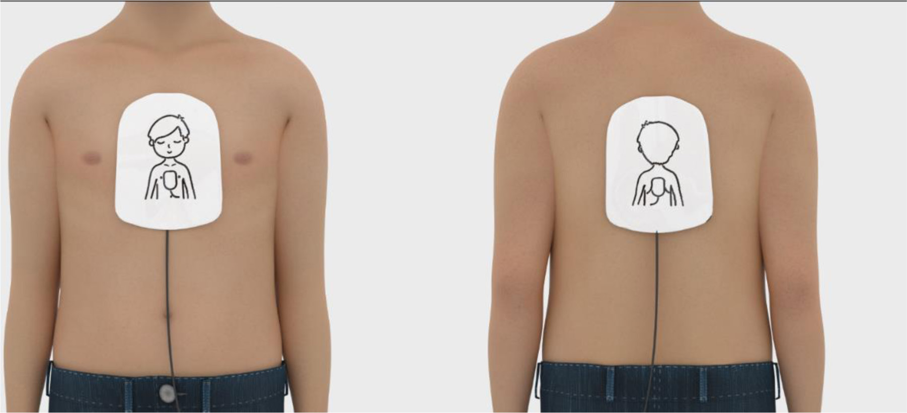
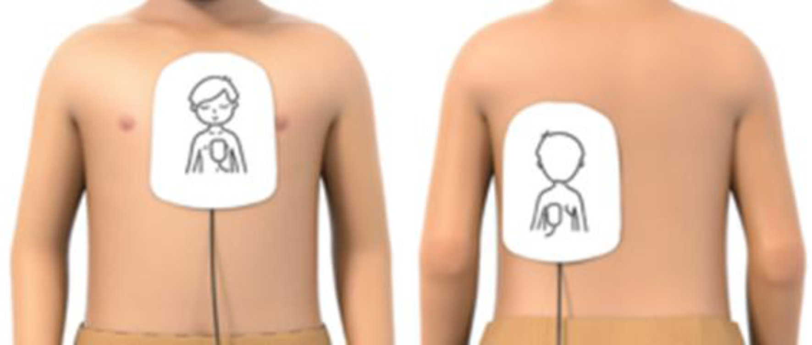
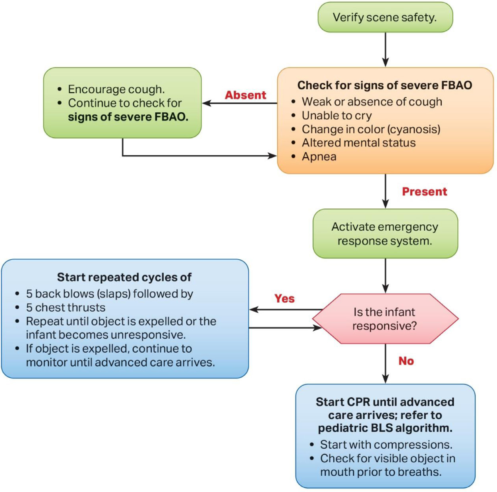
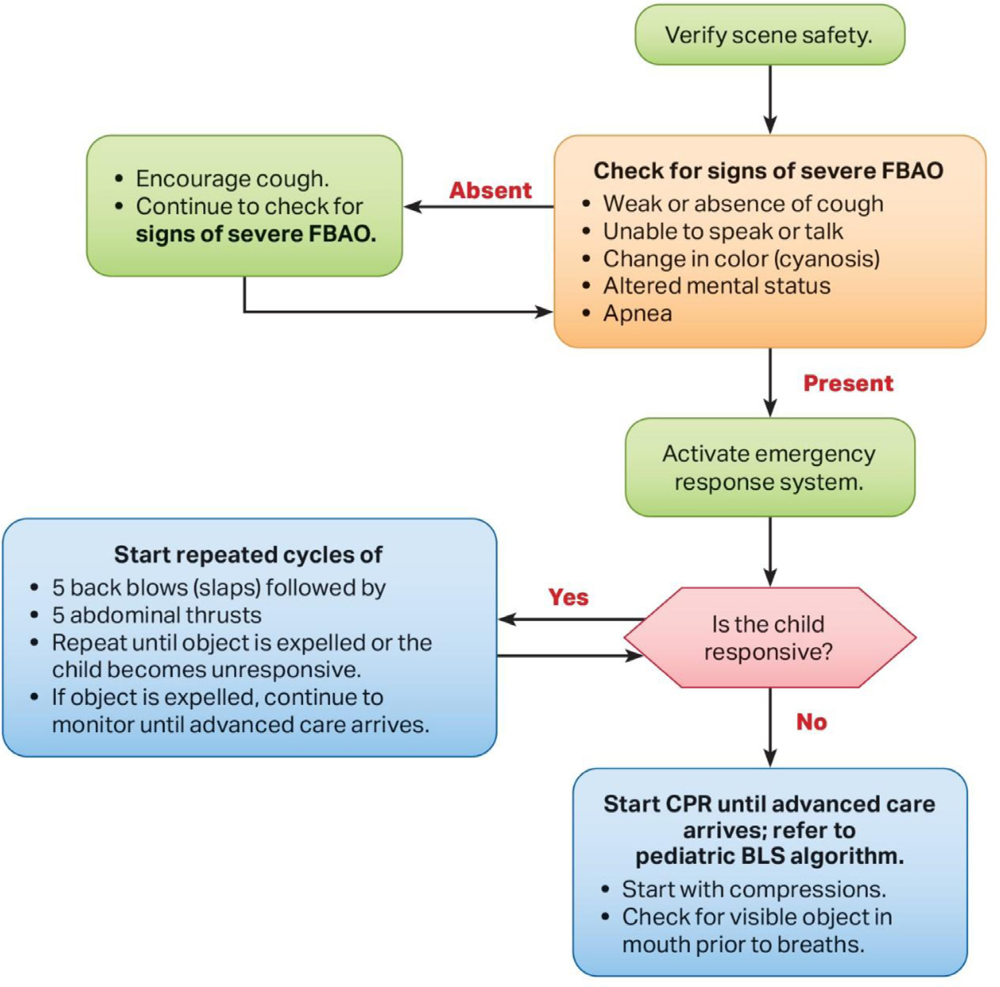
חסימה חלקית (משתעל/משמיע קול): עודד שיעול, אל תטפח. הפך מחוסר הכרה? השכב על משטח קשיח והתחל החייאה (עיסויים, ללא בדיקת דופק); לפני הנשמה — בדוק גוף זר נראה בפה. ללא חיטוט עיוור.
Mild (coughing/making sounds): encourage coughing, do not slap the back. If unresponsive: start CPR (compressions, no pulse check); check the mouth for a visible object before breaths. No blind finger sweeps.
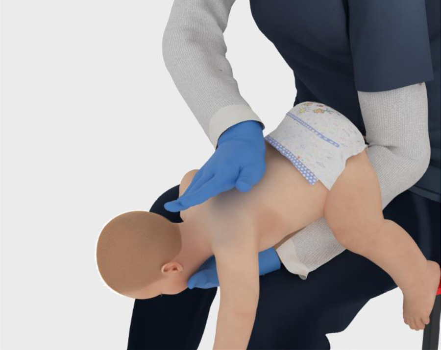
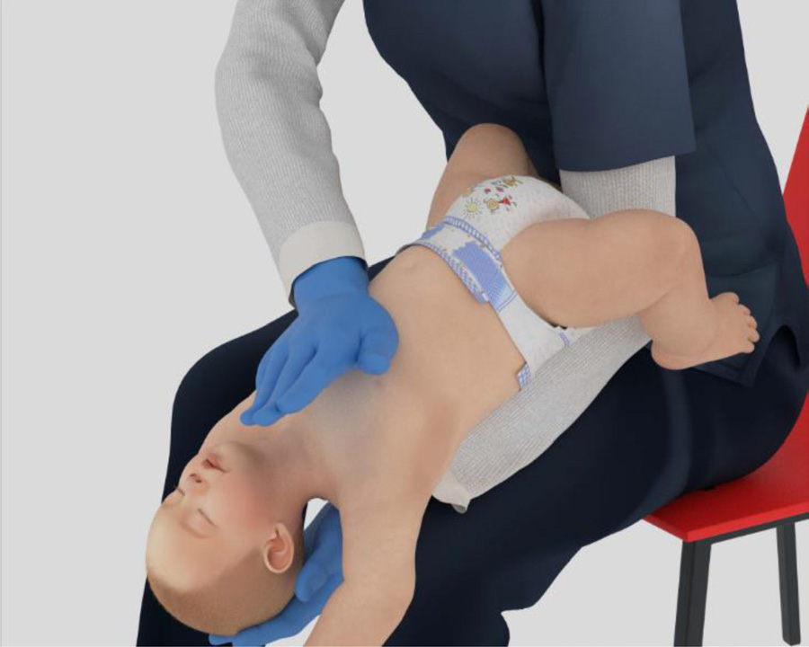
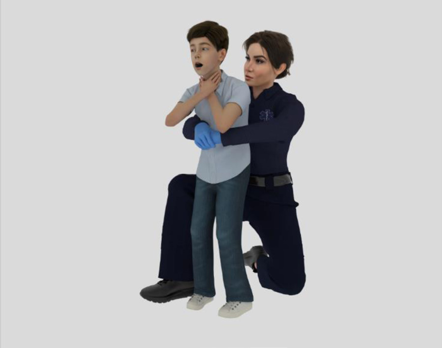
תינוק: לסירוגין 5 טפיחות גב ו-5 לחיצות חזה — ללא לחיצות בטן. ילד: 5 טפיחות גב ו-5 לחיצות בטן.
Infant: alternate 5 back blows with 5 chest thrusts — no abdominal thrusts. Child: 5 back blows with 5 abdominal thrusts.